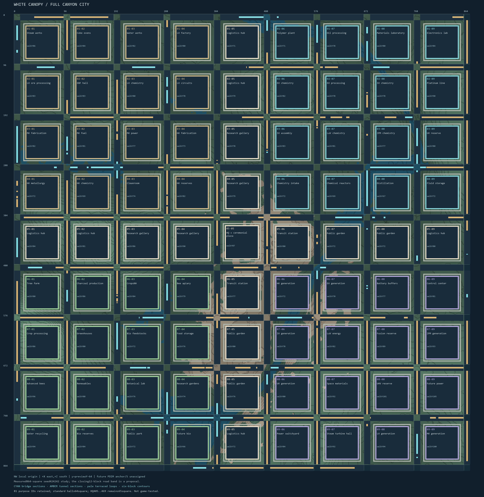
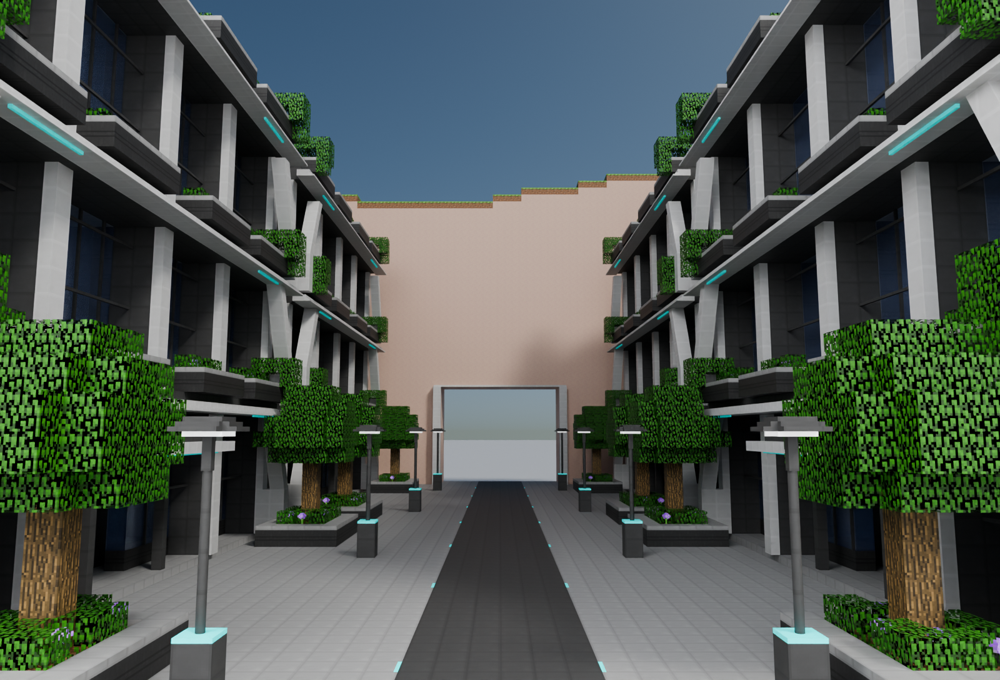
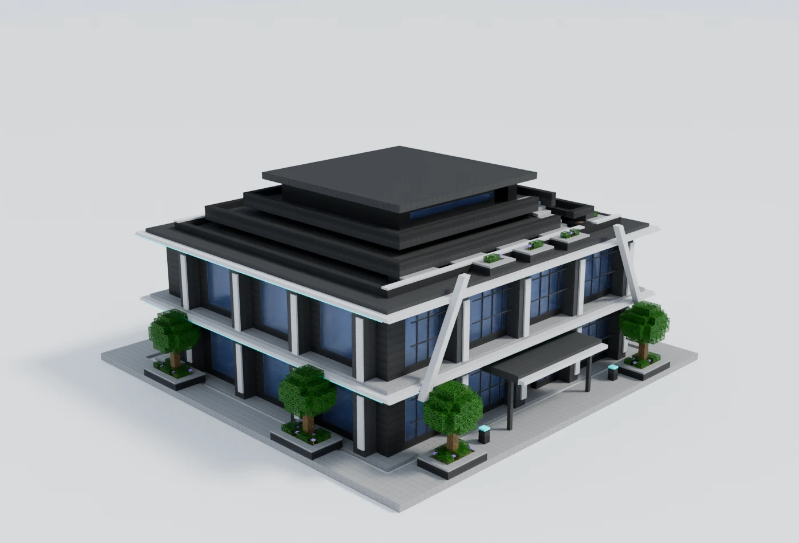
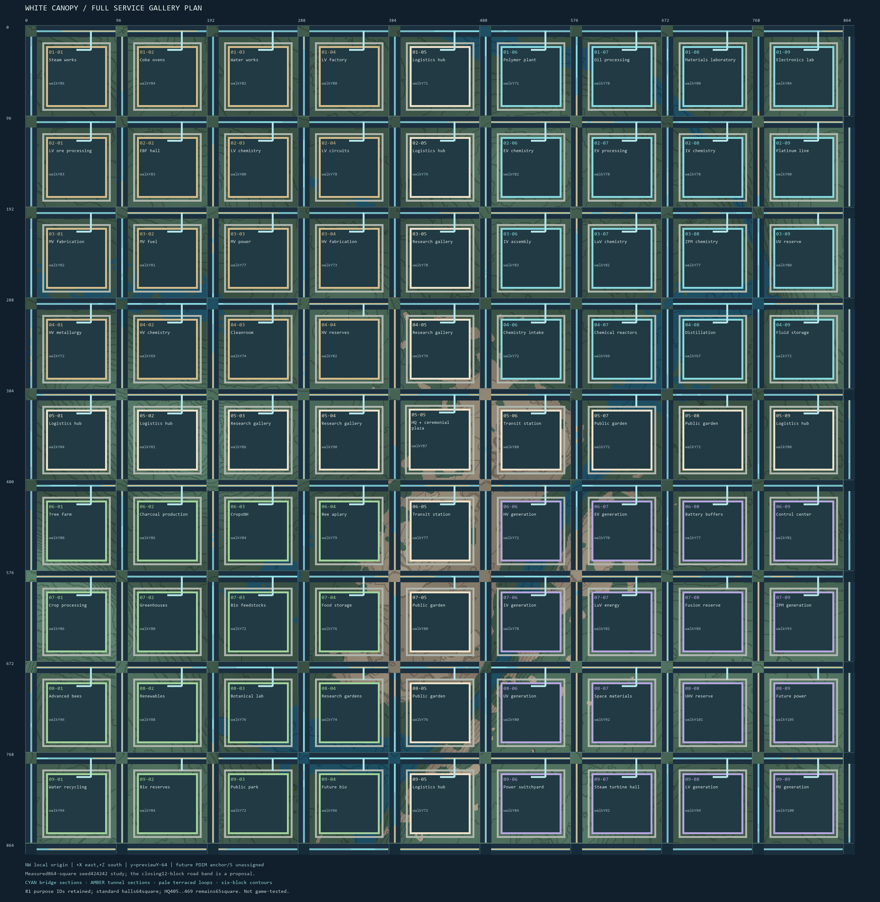
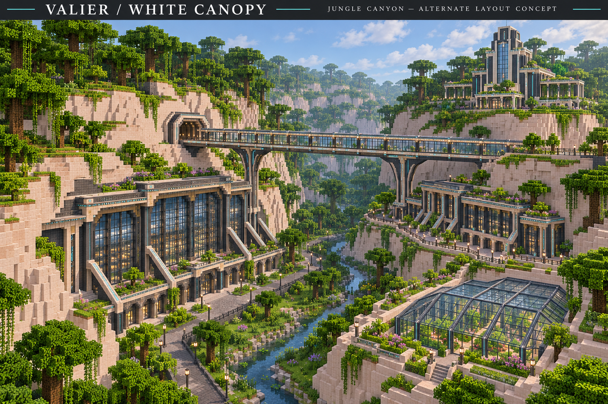
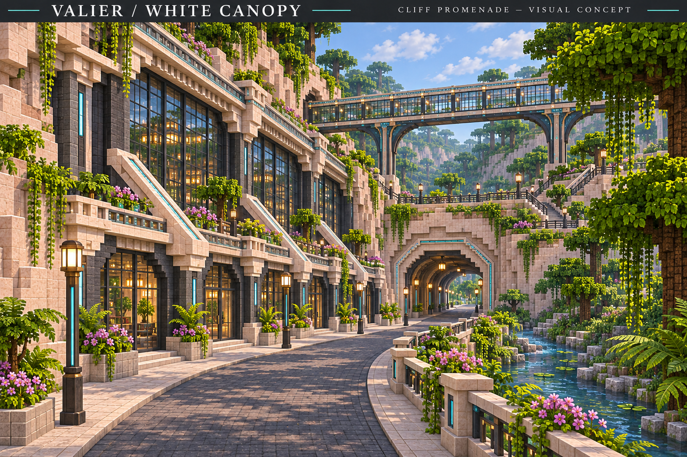
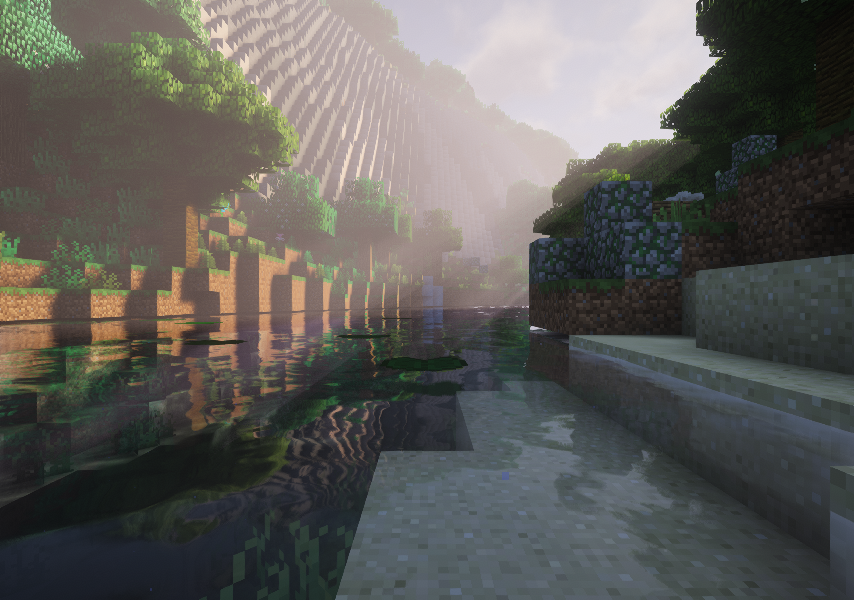
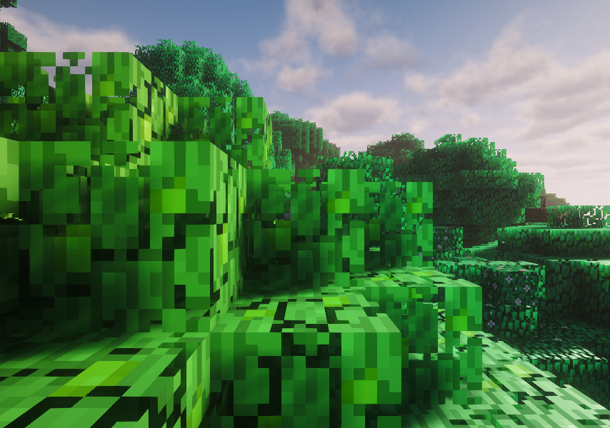

Full blueprint

North is up. Terrain contours are six blocks apart. All positions are city local; the preview is evidence, not a chosen PDIM world anchor.
SAMPLE 02 / FULL CANYON CITY
Pale molded frames, deep charcoal walls and planted streets. A complete architectural city study shaped around a real GTNH Jungle Canyon landscape.

JW01 · Exact saved native geometry and installed textures. Offline rendering with illustrative daylight; authored demonstration cliffs. It is not a game screenshot or a crop of the surveyed terrain.
864 × 864 core · 876 × 876 with closing roads · northwest local origin, +X east, +Z south. Local y = preview Y − 64. The future PDIM anchor, height and orientation are unassigned.
01 / THE WHOLE BASE
The plan retains every department and the protected 65 × 65 HQ plot. Streets climb in half-block steps, cross open valleys on supported decks, and pass through high ground using molded tunnel portals. Each building has a terraced perimeter and a branch to the service network.
Scroll / pinch to zoom · drag to pan · select a building · + / − zoom · 0 fit · arrow keys pan · Esc close
Select any department to see its purpose, height, native shell and connection.
Measured from the separate creative preview Valier Canyon Preview 2, seed 424242, RWG2_CONTINENTS. Preview northwest X1152 / Z−256; 746,496 loaded ground columns, Y47..172. The study includes 53,836 Jungle Canyon biome-328 columns and 61,472 columns with white clay above Y63, alongside neighboring biomes and waterways. It is not 864 square blocks of one pure biome.
The ground map excludes foliage and is a column survey: caves, overhang interiors and underground foundations are not captured. The eastern/southern 12-block closing road band lies beyond the measured core. Actual PDIM terrain and generator behavior must be surveyed before staking this layout.
Exact terrain arrays · Survey provenance · Preserved first four-building field study

North is up. Terrain contours are six blocks apart. All positions are city local; the preview is evidence, not a chosen PDIM world anchor.
02 / BUILDINGS BY SECTOR
See how the canyon frontage changes across the five sectors, from Steam Works at the cliff foot to the civic crown above the river.

Preserved source shell, installed-texture offline render before terrain placement. The full city keeps this architecture unchanged.
| Plot / department | Sector | Preview walk Y | Service access | Inspect |
|---|
Department purposes are retained from the Phase 3 register. Historical age labels remain in the downloadable register, not as verified recipe or progression unlock claims. IV+ departments are reservations; active equipment through EV is documented separately.
03 / ROADS, BRIDGES & SERVICE GALLERIES
Three-block sidewalks flank a six-block lane. Grades rise by at most half a block per cell using native covers. Road sections retain a 10-wide, six-high clear envelope; junctions preserve the central six-wide crossing.
Four blocks of clear height, nine blocks below the street. The connected air union opens junctions automatically. Sixty-eight two-flight vestibules reach existing basements; thirteen outdoor plots receive capped service vaults.
85 bridge sections and 149 tunnel sections, including 44 and 112 at least 12 blocks long. They are contiguous classified sections, not that many independent giant structures. Guard glazing, molded headers, piers and terraced loops are modeled.
| Section | Type | Along-axis range | Length |
|---|

These are architectural access corridors and interfaces. No pipes, cables, fuel transport or commissioned machinery are included in these exports.
Diesel / light fuel remains the primary electrical route through EV. Steam Works retains the confirmed two 36-HP solid-fuel boiler program and compact workshop as a limited backup. Manual equipment guide through EV uses Sample A coordinates; its networks require a separate B routing adaptation before installation.
04 / EXACT-BLOCK ARCHITECTURE
Seven explicit coordinate models use the actual block textures, ArchitectureCraft profiles and Forge Multipart cuts. Continuous facade knees, molded cornices, restrained cyan reveals and quarter-block-diameter lamp masts replace coarse stair-stepped decoration.
Images show the saved full demonstration scenes, including authored terrain. Their separate JWxx-A ghost exports remove the clay/grass/jungle scenery and water. The 181 city exports have their own reconciled bill. Do not add the seven alternative sample scenes to it.
MODULAR / BUILD TO YOUR OWN TERRAIN
Use these detached components without committing to the full 864-square city. Roads, intersections, access tunnels, building pads, bridges, walkways, facade sections, planters, benches, fountains and pocket parks share the same native palette. Each has exact ports, level blueprints, a construction guide, stock and a WorldEdit schematic.
Match both the clear-port center and its walking height. Road ports are 12 wide; galleries are 5 clear within 7 outer blocks; pedestrian walks are 6 clear within 8. Graded pieces change elevation. Pre-authored T/corner orientation variants preserve AC/FMP data. Native microblocks and Caelestis light cuts are included; functional equipment is excluded.
Actual installed textures and saved native geometry, rendered offline with illustrative lighting. Gallery images are roof-off cutaways; the supplied models and schematics retain their roofs. Not game screenshots. Fountain water is displayed but excluded from its ghost; fill it manually.
05 / BLOCK BY BLOCK
Choose WC01 for the cliff promenade with its scenery or WC01-A for the dry architectural build. You can also inspect all 81 building shells, 100 disjoint civil work tiles, seven full demonstration scenes and 50 terrain-adaptable modules. The top-down host grid uses actual textures; outlines mark native shaped or multipart hosts. Select one to read its exact shape, orientation, material and cut size. Use the matching elevations for its silhouette.
Loading exact model…
Select an occupied host.
Empty grid cells are unoccupied in the authored model, not a complete excavation instruction. Native hosts can contain several cut pieces; a host count is not a full-block crafting bill. Full demo models and filtered demo ghosts deliberately differ. Model data decompresses locally in current Edge / Chrome, including from the offline guide.
06 / INSTALLED BLOCK PALETTE
Swatches show extracted source pixels. White terracotta is warm blush, not quartz-white. Grass and leaf colors in the sample renders use a declared vanilla-colormap sample climate (temperature/rainfall 0.9/0.9); actual biome, resource pack and shader colors may differ. Caelestis emission and shader bloom are separate. Recipes, cutting yield and game appearance still need a material mock-up.
Full registry, metadata and texture provenance · Installed-asset comparison
07 / KEEP THE DESIGN INTENT
Use the aerial to set the height of the civic crown and the glazed crossing. Use the promenade to join a hall door, garden stair and river walk at street level.

Preserved AI concept, not a measured blueprint.

Preserved AI concept, not a game screenshot.

Actual GTNH 2.9.2 game screenshot, before construction.

Actual preview screenshot; target PDIM terrain remains unknown.
08 / TAKE IT INTO SURVIVAL
Maps, model layers, sample images, coordinates, palette, sector programs and native ghosts. Shared source reference media are included in the archive.
Download offline guide81 preserved shells + 100 disjoint civil work tiles. Zero machines, tanks, coils, pipes, cables or conduits. Multipart and ArchitectureCraft detail included.
181 city schematicsFiltered architectural demonstrations. Terrain context is excluded. JW05 is an intentionally open display cutaway; build closed galleries from the civil tiles.
7 sample schematicsNative schematics are statically decoded and reconciled, not target-game import certified. Use Schematica ghost overlays with Printer OFF and supply/place materials yourself. The guide explains WorldEdit loading and clipboard-minimum anchors; no structure has been pasted into a world.